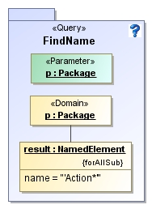

These querying examples demonstrate how
to use the QVT-R graphical query facility.
We design a QVT-R transformation to collect
and execute these queries.
This transformation takes the
UML superstructure model as the source
model, and outputs a html file to show the
query results.
QVT-R model for the transformation.
Source Metamodel: a slight variant of EMOF model, here all classes are sub-class of NamedElement, which has attributes xmi:id and name.
Target Metamodel: a simple html model
.
The transformation includes two relations: the top-level relation QueryUML that starts the transformation, creates an empty html model, invokes the queries from the where clause, and sends the results to relation Display.
The relation Display creates a
new row in the html table in the html model
to put the query result.
The query CountClass counts the number of classes contained in all packages.
The XSLT function generated for query CountClass :
<xsl:function
name="my:CountClass">
<xsl:variable
name="cls"
select="$xmiXMI//packagedElement[@xmi:type='uml:Class']"/>
<xsl:variable
name="result"
select="count($cls)"/>
<xsl:sequence
select="$result"/>
</xsl:function>
Query GetClsWithAssoNum obtains a list of classes with a given number of associations.
The XSLT function generated for query GetClsWithAssoNum :
<xsl:function
name="my:GetClsWithAssoNum">
<xsl:param
name="assoNum"/>
<xsl:variable
name="cls"
select="$xmiXMI//packagedElement[@xmi:type='uml:Class']"/>
<xsl:variable
name="result"
select="$cls[count(ownedAttribute[@xmi:type='uml:Property']/@association)=$assoNum]"/>
<xsl:sequence
select="$result"/>
</xsl:function>
Query GetMaxDepth gets the maximal depth of class inheritancespecified in the graphical notation. It iteratively calls query CountSuper to get a collect of depth numbers.
The XSLT function generated for query GetMaxDepth :
<xsl:function
name="my:GetMaxDepth">
<xsl:variable
name="cls"
select="$xmiXMI//packagedElement[@xmi:type='uml:Class']"/>
<xsl:variable
name="depths"
select="(for $c in $cls return
my:CountSuper($c,0))"/>
<xsl:variable
name="result"
select="max($depths)"/>
<xsl:sequence
select="$result"/>
</xsl:function>
Query CountSuper recursively calls itself to count the number of its super classes.
The XSLT function generated for query CountSuper :
<xsl:function
name="my:CountSuper">
<xsl:param
name="c"/>
<xsl:param
name="num"/>
<xsl:variable
name="sc"
select="my:xmiXMIrefs($c/generalization[@xmi:type='uml:Generalization']/@general)[@xmi:type='uml:Class']"/>
<xsl:variable
name="cnum"
select="$num + 1"/>
<xsl:variable
name="supers"
select=" if (not(exists($sc))) then
$cnum else (for $s in $sc return
my:CountSuper($s,$cnum)) "/>
<xsl:variable
name="result"
select="max($supers)"/>
<xsl:sequence
select="$result"/>
</xsl:function>
Query FindName finds all model elements whose names begins with ''Action'' in a given package:

The XSLT function generated for query FindName :
<xsl:function
name="my:FindName">
<xsl:param
name="p"/>
<xsl:variable
name="result"
select="$p//*[matches(@name,'Action*')]"/>
<xsl:sequence
select="$result"/>
</xsl:function>
Query GettAttributeName gets a set of names of primitive attributes in a given class. The query selects a primitive attribute by (1) it owns an element of DataType; (2) it does not have an association link; (3) its visibility is public.
The XSLT function generated for query GettAttributeName :
<xsl:function
name="my:GetAttributeName">
<xsl:param
name="c"/>
<xsl:variable
name="result"
select="$c/ownedAttribute[@xmi:type='uml:Property'][@visibility='public'][type[@xmi:type='uml:PrimitiveType']
and
not(my:xmiXMIrefs(@association)[@xmi:type='uml:Association'])]/@name"/>
<xsl:sequence
select="$result"/>
</xsl:function>
The generated XSLT stylesheet (include XSLT stylesheet) for the transformation.
input model : UML superstructure.xmi